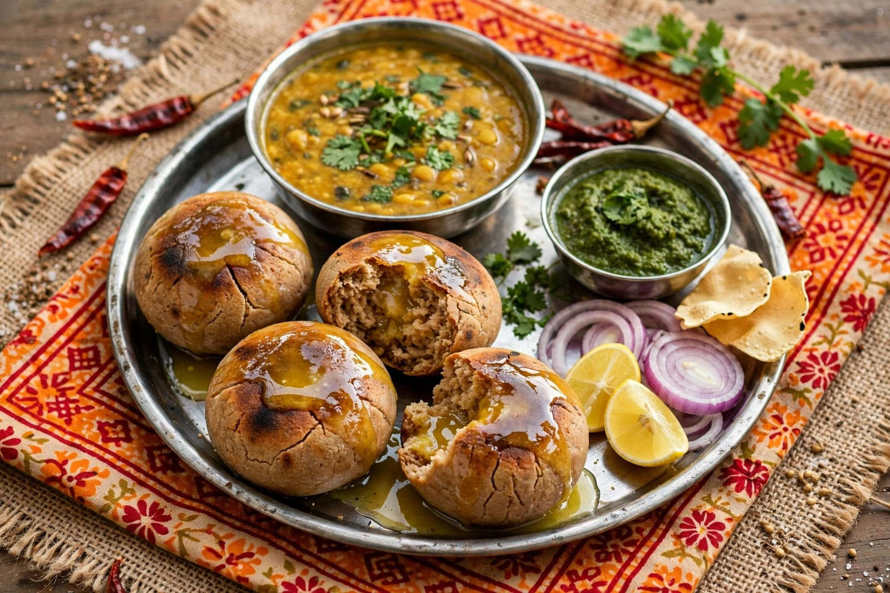
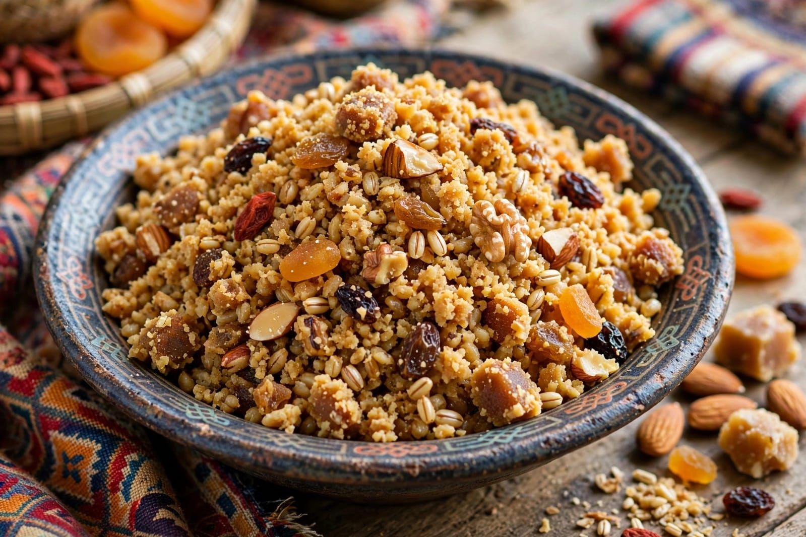

About Pushkar Fair
Pushkar Fair is one of the most famous traditional fairs of Rajasthan. It is held every year in the town of Pushkar near the sacred Pushkar Lake. The fair is known for its large gathering of camels, horses and other livestock. Traders and visitors from different parts of Rajasthan and other regions come together during this colourful event.
The fair is famous for its camel trading, cultural performances and traditional competitions. Camels are beautifully decorated and presented during the celebrations. Visitors can enjoy folk music, traditional dances, handicrafts and colourful markets. The fair gives people an opportunity to experience the traditional lifestyle and cultural heritage of Rajasthan.
Pushkar Fair is also connected with the religious importance of Pushkar. Many pilgrims visit Pushkar Lake and the temples during this period. The fair creates a lively atmosphere with traditional clothing, music, food and local crafts. It is an important cultural event that showcases the traditions, art and hospitality of Rajasthan.
Special Foods

Dal Baati
Dal Baati is a famous traditional Rajasthani dish enjoyed during festive occasions.

Churma
Churma is a popular sweet dish traditionally served with Dal Baati.

Ghevar
Ghevar is a traditional Rajasthani sweet prepared especially during celebrations.